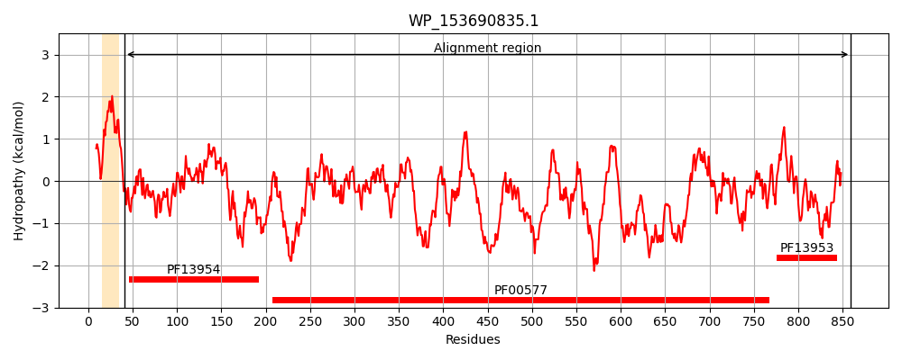
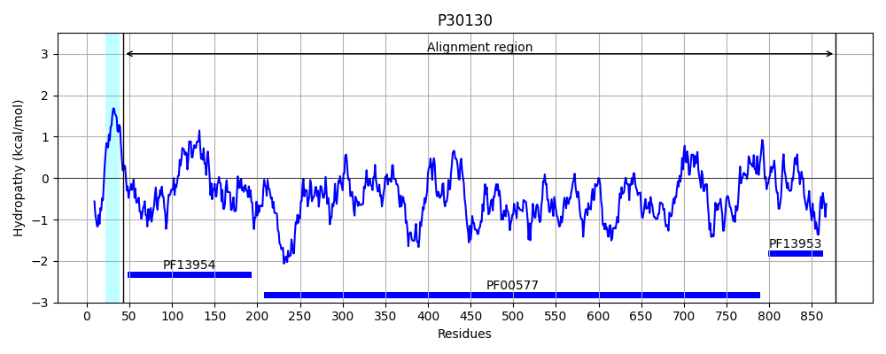
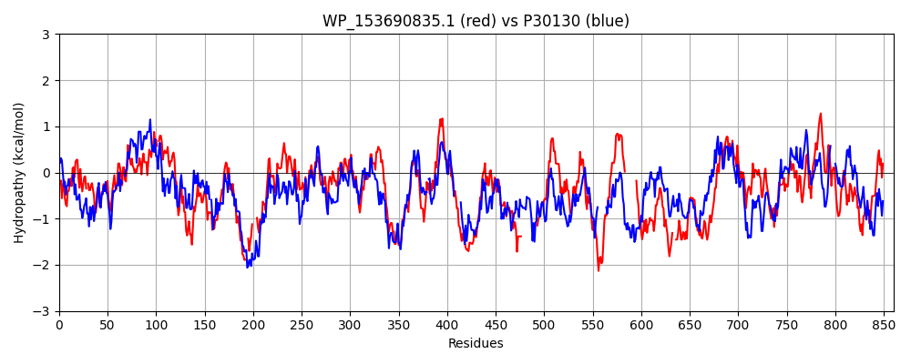

Hit Accession: P30130
Hit TCID: 1.B.11.3.9
Hit Description: gnl|BL_ORD_ID|9707 gnl|TC-DB|P30130|1.B.11.3.9 Outer membrane usher protein fimD OS=Escherichia coli (strain K12) GN=fimD PE=1 SV=2
Mach Len: 860
e:0.000000
Query TMS Count : 1
Hit TMS Count: 1
TMS-Overlap Score: 0.800000
Predicted Substrates:None
BLAST Alignment:
Score: 1434 , Bit scores: 556 bits, E-value: 0.0e+00, Alignment length: 860, Percentage identity: 37
Query: 41 AEAGEYFNPNLLEVAEDPAASVDLSYFSQ-DGVPPGTYHLDVYINDKYVSSESLTFQEIGHDAGATASPCLSAEYLNSWLINTTAYPQL-FAAGETCARLSA-IPGMTFSVSLAQQRIDFTVPQAAMLNRPRDYIPESQWQQGINAGLLNYSVTGQRNAPRHNGATVDSQFVSLQPGVNLGPWRLRNYSTYSH--SDNSS----RWESVYSYLARDIHTLRSQLVVGNTYTSSGIFDSVSFTGLQLSSDKEMLPDSLHGFAPTIRGIARTTAEVSVYQNGYSIYKTTVAPGAFEINDLYATGSAGDLYVTVKESDGSEQNFVVPFASLAVLQREGQLDYALSSGRTRSGSSDDKEYNFIQSSLAYGATSNFTLYTGFQQAEDKYTNLLLGAGFNLGTIGALSFDGSQSWADVKTSDTASSTRKEQGQSYRVRFSKSFLQTGTSFSVAGYRYSTAGYYSFQDFVDNASTQRDCCTQSG----------------RTKGRFDASLSQTLFGYGSLSLSLVNETYWDSSRM-ESVGVGYSGSIGRASYFINYSYNRNVQSTDDSGNNRPASDTIVSLTLSIPLGETL-----------SANYTLNHGRHNDTTHSVGLNGSAFEDRSLNWSLQEGY---NTQDKSTSGNLSVNYQGSKGDVAGGYGYDHYSNHYNYSLRGGMVAHAGGLTLSRFLGESAALVETPGVSDVRVQGQTNVTTDAAGYAVVPYVRPYHRNSLALDEQQMA-GAEVDNVARTVVPTRNAIVKVQYDTRIGYKAMLTLCTRNGVVPFGALVTLDNDRASAARSNIVGDEGQVYLTGLQKKGQLLARWGEKSSEQCTVHYDFSSMALGDDILFYQAECR 859
+ A YFNP L A+DP A DLS F +PPGTY +D+Y+N+ Y+++ +TF + G PCL+ L S +NT + + A + C L+ + T + + QQR++ T+PQA M NR R YIP W GINAGLLNY+ +G + G +++LQ G+N+G WRLR+ +T+S+ SD SS +W+ + ++L RDI LRS+L +G+ YT IFD ++F G QL+SD MLPDS GFAP I GIAR TA+V++ QNGY IY +TV PG F IND+YA G++GDL VT+KE+DGS Q F VP++S+ +LQREG Y++++G RSG++ ++ F QS+L +G + +T+Y G Q A D+Y G G N+G +GALS D +Q+ + T + GQS R ++KS ++GT+ + GYRYST+GY++F D + + TQ G +G+ +++Q L +L LS ++TYW +S + E G + + ++ ++YS +N + D +++L ++IP L SA+Y+++H + T+ G+ G+ ED +L++S+Q GY + ++G ++NY+G G+ GY + Y + GG++AHA G+TL + L ++ LV+ PG D +V+ QT V TD GYAV+PY Y N +ALD +A ++DN VVPTR AIV+ ++ R+G K ++TL N +PFGA+VT + S+ S IV D GQVYL+G+ G++ +WGE+ + C +Y + + AECR
Sbjct: 43 SSADLYFNPRFL--ADDPQAVADLSRFENGQELPPGTYRVDIYLNNGYMATRDVTFNTGDSEQGIV--PCLTRAQLASMGLNTASVAGMNLLADDACVPLTTMVQDATAHLDVGQQRLNLTIPQAFMSNRARGYIPPELWDPGINAGLLNYNFSGN-SVQNRIGGNSHYAYLNLQSGLNIGAWRLRDNTTWSYNSSDRSSGSKNKWQHINTWLERDIIPLRSRLTLGDGYTQGDIFDGINFRGAQLASDDNMLPDSQRGFAPVIHGIARGTAQVTIKQNGYDIYNSTVPPGPFTINDIYAAGNSGDLQVTIKEADGSTQIFTVPYSSVPLLQREGHTRYSITAGEYRSGNAQQEKTRFFQSTLLHGLPAGWTIYGGTQLA-DRYRAFNFGIGKNMGALGALSVDMTQA------NSTLPDDSQHDGQSVRFLYNKSLNESGTNIQLVGYRYSTSGYFNFADTTYSRMNGYNIETQDGVIQVKPKFTDYYNLAYNKRGKLQLTVTQQLGRTSTLYLSGSHQTYWGTSNVDEQFQAGLNTAFEDINWTLSYSLTKNAW--------QKGRDQMLALNVNIPFSHWLRSDSKSQWRHASASYSMSHDLNGRMTNLAGVYGTLLEDNNLSYSVQTGYAGGGDGNSGSTGYATLNYRGGYGNANIGYSHSDDIKQLYYGVSGGVLAHANGVTLGQPLNDTVVLVKAPGAKDAKVENQTGVRTDWRGYAVLPYATEYRENRVALDTNTLADNVDLDNAVANVVPTRGAIVRAEFKARVGIKLLMTLTHNNKPLPFGAMVTSE----SSQSSGIVADNGQVYLSGMPLAGKVQVKWGEEENAHCVANYQLPPESQQQLLTQLSAECR 878 | Protein Hydropathy Plots: |
|---|
|  |  |
Pairwise Alignment-Hydropathy Plot:
|
|---|
|  |